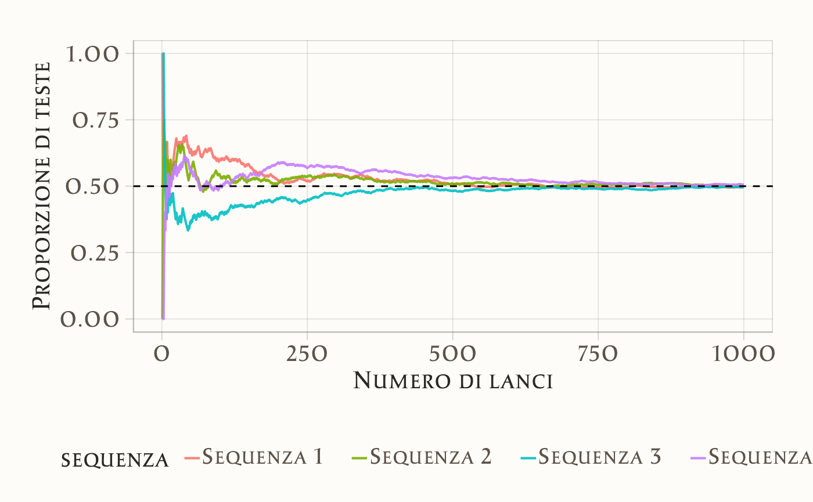

24 Interpretazione della probabilità
- a comprendere le diverse interpretazioni della probabilità.
- Leggere Why probability probably doesn’t exist (but it is useful to act like it does (Spiegelhalter, 2024).
- Leggere il capitolo Introduction to Probability (Probability? and statistics).
- Leggere Capitolo 81.
24.1 Introduzione
Nel corso di questo capitolo, esploreremo varie concezioni della probabilità, tra cui la visione classica, frequentista e bayesiana. Inoltre, introdurremo la simulazione con R per una migliore comprensione della legge dei grandi numeri, un concetto fondamentale nell’ambito della probabilità. Iniziamo introducendo il concetto di causalità.
24.2 Il Concetto di Casualità e la Teoria della Probabilità
David Spiegelhalter, in un recente articolo pubblicato su Nature, descrive il concetto di probabilità partendo dall’idea di incertezza:
Life is uncertain. None of us know what is going to happen. We know little of what has happened in the past, or is happening now outside our immediate experience. Uncertainty has been called the ‘conscious awareness of ignorance’ — be it of the weather tomorrow, the next Premier League champions, the climate in 2100 or the identity of our ancient ancestors (Spiegelhalter, 2024).
L’incertezza può essere vista come una manifestazione della casualità, che rappresenta non solo un fenomeno, ma anche un modello concettuale per affrontare l’imprevedibilità della realtà. Attraverso il concetto di casualità, possiamo gestire e quantificare eventi che, pur essendo imprevedibili singolarmente, seguono schemi regolari e osservabili. Questo rende la casualità uno strumento fondamentale per comprendere il mondo e prendere decisioni.
Attempts to put numbers on chance and uncertainty take us into the mathematical realm of probability, which today is used confidently in any number of fields (Spiegelhalter, 2024).
La teoria della probabilità fornisce una risposta matematica all’incertezza, permettendo di esprimere in termini numerici il grado di possibilità associato a un evento. Grazie a questa formalizzazione, possiamo modellare fenomeni complessi e applicare il concetto di probabilità in contesti che spaziano dalla ricerca scientifica alla vita quotidiana.
24.2.1 L’Urna come Modello della Casualità
Un classico esempio utilizzato per rappresentare la casualità è il modello dell’urna. Immaginiamo un’urna contenente palline identiche, ognuna numerata in modo univoco. Se ogni pallina ha la stessa probabilità di essere estratta, l’estrazione è considerata casuale. Anche se non possiamo prevedere quale pallina verrà estratta, sappiamo che ogni pallina ha uguali possibilità di essere selezionata.
Questo modello, per quanto semplice, incarna l’essenza della casualità. La sua semplicità consente di estenderne i principi a situazioni più complesse. Ad esempio, il modello dell’urna può essere utilizzato come base concettuale per comprendere processi che vanno ben oltre l’estrazione di palline, trovando applicazioni in ambiti come la statistica, la scienza e la psicologia.
24.2.1.1 Applicazioni del Modello della Casualità
Indagini statistiche
Il campionamento casuale nelle ricerche statistiche garantisce un campione rappresentativo di una popolazione più ampia, riducendo il rischio di bias di selezione e migliorando la generalizzabilità delle conclusioni.
Sperimentazione scientifica
La randomizzazione è essenziale per controllare le variabili confondenti nelle sperimentazioni. Permette di attribuire le differenze osservate tra i gruppi al trattamento, riducendo l’effetto di fattori esterni.
Open any science journal, for example, and you’ll find papers liberally sprinkled with P values, confidence intervals and possibly Bayesian posterior distributions, all of which are dependent on probability (Spiegelhalter, 2024).
Simulazioni
In discipline come fisica e psicologia, i modelli di simulazione basati sulla casualità permettono di analizzare sistemi complessi e formulare previsioni, offrendo strumenti indispensabili per la ricerca scientifica.
Nonostante la semplicità, il modello dell’urna costituisce un pilastro per comprendere e applicare il concetto di casualità in un’ampia varietà di contesti.
24.2.2 Dalla Casualità alla Teoria della Probabilità
La teoria della probabilità si sviluppa a partire dal concetto di casualità, fornendo strumenti matematici per analizzare e quantificare rigorosamente l’incertezza. Questo approccio consente di tradurre l’intuizione in un linguaggio formale, attraverso il quale possiamo:
Quantificare l’incertezza
Assegnare un valore numerico agli esiti possibili permette di esprimere in modo preciso la probabilità di ciascun evento.Combinare informazioni
Con regole come la somma e il prodotto delle probabilità, possiamo calcolare la probabilità di eventi complessi derivati da eventi più semplici.Aggiornare le credenze
La teoria della probabilità, in particolare nella sua formulazione bayesiana, fornisce metodi per aggiornare razionalmente le stime di probabilità alla luce di nuove informazioni.Prendere decisioni informate
Valutando rischi e benefici attesi, la probabilità guida decisioni ottimali in condizioni di incertezza.
In sintesi, la casualità e la probabilità rappresentano strumenti fondamentali per navigare un mondo incerto, fornendo un linguaggio preciso per descriverlo e una struttura rigorosa per ragionare su di esso. Comprendere questi concetti è essenziale non solo per matematici o statistici, ma per chiunque voglia prendere decisioni consapevoli, sia nella ricerca che nella vita quotidiana.
Nei capitoli seguenti, esploreremo come questi principi si applichino all’analisi dei dati, con un focus sull’approccio bayesiano. Questo metodo, attraverso un processo iterativo di aggiornamento delle conoscenze, rappresenta una modalità intuitiva e potente per affrontare l’incertezza e migliorare le nostre inferenze alla luce di nuove evidenze.
24.2.3 Storia e Definizioni della Probabilità
La probabilità è un concetto cardine nella matematica e nelle scienze, utilizzato per misurare l’incertezza e studiare fenomeni aleatori. Nel corso del tempo, la sua definizione si è evoluta, passando da intuizioni di tipo qualitativo a formulazioni formali e rigorose.
La probabilità nasce dal bisogno di distinguere gli eventi deterministici, il cui esito è prevedibile, da quelli casuali, caratterizzati dall’imprevedibilità. Un evento deterministico, almeno in teoria, produce sempre lo stesso risultato nelle stesse condizioni, mentre un evento casuale ha esiti che non possiamo prevedere con certezza. Questa distinzione ha portato alla necessità di quantificare l’incertezza associata agli eventi casuali, utilizzando il concetto di probabilità.
24.2.4 Fonti dell’Incertezza
L’incertezza nei fenomeni casuali può derivare da due fonti principali:
Incertezza epistemica: Questa forma di incertezza è legata alla nostra conoscenza limitata. Ad esempio, in un esperimento scientifico complesso, la nostra impossibilità di controllare tutte le variabili può introdurre incertezza nei risultati.
Incertezza ontologica: Si riferisce alla casualità intrinseca di alcuni fenomeni, come in fisica quantistica, dove l’indeterminazione sembra essere una caratteristica fondamentale della realtà stessa. Un esempio intuitivo è il lancio di un dado: indipendentemente da quanto conosciamo le condizioni, non possiamo prevedere con assoluta precisione il risultato.
Il fisico danese Niels Bohr ha offerto un’interpretazione illuminante su questo tema: la fisica, secondo Bohr, non mira a rivelare una verità assoluta sulla natura, ma a capire cosa possiamo dire su di essa. Questa visione riconosce che l’incertezza – sia epistemica che ontologica – riflette i limiti del nostro linguaggio e delle nostre conoscenze. Questo approccio si allinea bene con l’interpretazione soggettiva della probabilità, secondo la quale la probabilità rappresenta il grado di fiducia che un individuo ha riguardo al verificarsi di un evento, basata sulle informazioni di cui dispone.
24.2.5 Assiomatizzazione della Probabilità
Nel 1933, il matematico Andrey Kolmogorov fornì una definizione formale della probabilità, introducendo un sistema assiomatico che costituì la base della moderna teoria della probabilità. Questa formulazione ha trasformato la probabilità in una disciplina matematica rigorosa, offrendo uno strumento essenziale per quantificare l’incertezza in contesti scientifici. Da semplice metodo per analizzare i giochi d’azzardo nel XVII secolo, la probabilità è diventata una pietra miliare del ragionamento scientifico, fornendo un linguaggio universale per descrivere e analizzare l’incertezza in numerosi campi del sapere.
24.2.6 La Storia della Probabilità
La probabilità moderna nacque da una domanda posta da Antoine Gombaud (Chevalier de Méré) a Blaise Pascal nel XVII secolo su come dividere equamente le puntate di un gioco d’azzardo interrotto.
24.2.6.1 Il Problema dei Punti
Il problema può essere riassunto come segue:
Immaginiamo due persone, A e B, che partecipano a un gioco in cui il primo che vince sei round consecutivi ottiene un premio. Dopo sei round, A ha vinto cinque round e B uno. Poiché il gioco si interrompe prima di assegnare il premio, come dovrebbero dividere il premio in modo equo?
Questa domanda diede origine a una corrispondenza tra Pascal e Fermat, che svilupparono una soluzione matematica basata sulle probabilità di vittoria per ciascun giocatore. Se, per esempio, A aveva una probabilità del 97% di vincere, mentre B una del 3%, sembrava equo assegnare il 97% del premio ad A. La loro corrispondenza ispirò l’opera di Christian Huygens, “De Ratiociniis in Ludo Aleae” (1657), che rimase un riferimento in probabilità per mezzo secolo.
24.2.7 Sviluppi Successivi
Nel 1713, Jacob Bernoulli pubblicò postumo “L’Arte della Congettura”, introducendo la legge dei grandi numeri e ponendo le basi per l’applicazione della probabilità al di fuori dei giochi d’azzardo, ad esempio nello studio della mortalità e della giustizia penale.
24.2.8 Interpretazione Classica
La definizione classica di probabilità fu proposta da Pierre-Simon Laplace (1749-1827), che basò il concetto sul calcolo combinatorio. Secondo Laplace, la probabilità di un evento è data dal rapporto tra i casi favorevoli e il numero totale di casi possibili, assumendo che tutti siano equiprobabili. Ad esempio, la probabilità di ottenere un “3” lanciando un dado è \(\frac{1}{6}\), poiché solo uno dei sei risultati è favorevole.
Tuttavia, questa definizione è limitata, poiché si basa sull’assunzione che ogni evento sia equiprobabile, il che non è sempre vero. Inoltre, è parzialmente circolare, poiché presuppone una conoscenza implicita del concetto di probabilità.
24.2.9 Interpretazione Frequentista
L’approccio frequentista, nato dalla necessità di evitare le limitazioni dell’interpretazione classica, definisce la probabilità come il limite della frequenza relativa con cui un evento si verifica in una serie infinita di prove. Per esempio, la probabilità di ottenere “testa” in un lancio di moneta può essere stimata come la frequenza relativa di “testa” sul totale dei lanci, quando il numero di lanci tende all’infinito. Questa definizione è utile, ma impraticabile in molte situazioni, poiché richiede un numero infinito di ripetizioni e assume che gli eventi futuri siano identici a quelli passati.
La figura seguente illustra la proporzione di risultati “testa” in una sequenza di lanci di una moneta equa. Si può osservare come la frequenza relativa dei risultati “testa” converga progressivamente verso il valore della probabilità teorica.

24.2.10 La Legge dei Grandi Numeri
La simulazione precedente offre una chiara illustrazione della Legge dei Grandi Numeri, un principio fondamentale della probabilità. Questo teorema afferma che, con l’aumentare del numero di esperimenti casuali ripetuti, la stima empirica della probabilità di un evento \(P(Y = y)\) tende a convergere al valore teorico.
In termini semplici, la Legge dei Grandi Numeri garantisce che, al crescere del numero di prove, la media dei risultati osservati si avvicina progressivamente al valore atteso della variabile casuale. Questo significa che, anche se i risultati individuali possono variare in modo casuale, la media dei risultati su un gran numero di esperimenti rifletterà con sempre maggiore precisione la probabilità teorica.
Questo principio è fondamentale perché assicura che:
- Con un numero sufficiente di prove, le stime empiriche delle probabilità siano affidabili.
- I modelli probabilistici possano essere utilizzati per descrivere e prevedere fenomeni reali, nonostante la variabilità intrinseca delle osservazioni singole.
Formalmente, se consideriamo una serie di variabili casuali indipendenti \(X_1, X_2, \ldots, X_n\), tutte con la stessa media teorica \(\mu\), la Legge dei Grandi Numeri si esprime come:
\[ \lim_{{n \to \infty}} P\left(\left|\frac{1}{n} \sum_{i=1}^n X_i - \mu\right| < \epsilon\right) = 1, \]
dove \(\epsilon\) è un numero positivo arbitrariamente piccolo e \(P(\cdot)\) rappresenta la probabilità. In altre parole:
- Man mano che \(n\) (il numero di prove) diventa molto grande, la media campionaria \(\frac{1}{n} \sum_{i=1}^n X_i\) sarà sempre più vicina alla media teorica \(\mu\), con una probabilità che si avvicina a 1.
Questo teorema ha implicazioni importanti nella pratica:
- Permette di stimare probabilità con crescente precisione al crescere delle osservazioni.
- Offre un fondamento teorico per l’utilizzo di medie campionarie in statistica e in molte applicazioni scientifiche.
In conclusione, la Legge dei Grandi Numeri è essenziale per comprendere come, nonostante la variabilità casuale nei risultati individuali, la regolarità emerge quando si considera un numero sufficientemente grande di osservazioni. Questo principio stabilisce il legame tra la teoria della probabilità e le applicazioni pratiche, garantendo che le stime empiriche, nel lungo periodo, riflettano i valori teorici con elevata precisione.
24.2.11 Il Problema del Caso Singolo
Nell’approccio frequentista alla probabilità, basato sull’idea che la probabilità sia definita come la frequenza relativa di un evento osservato su un grande numero di ripetizioni, emerge una limitazione concettuale nel trattare la probabilità di eventi singolari e non ripetibili. Secondo questa prospettiva, non è rigorosamente corretto parlare di probabilità associate a eventi unici e irripetibili.
Esempi di tali eventi includono:
- La probabilità che Alcaraz vinca contro Djokovic nella finale di Wimbledon del 2023.
- La probabilità che piova a Firenze il giorno di Ferragosto del 2025.
Questi scenari, legati a un preciso momento storico e privi di una struttura ripetitiva, non rientrano nella logica frequentista, che richiede la possibilità di osservare ripetutamente un evento per determinarne la probabilità. Infatti, nel contesto frequentista, una definizione operativa della probabilità implica un esperimento ripetibile un numero indefinito di volte in condizioni simili, una situazione non applicabile ai casi singoli.
Tuttavia, nel linguaggio comune, è frequente usare il termine “probabilità” per riferirsi anche a eventi singolari e irripetibili, come se la probabilità fosse una misura intuitiva del nostro grado di fiducia nel verificarsi di un evento. Questo uso non tecnico evidenzia una discrepanza tra il significato formale della probabilità nella teoria frequentista e l’interpretazione colloquiale del termine.
In conclusione, il problema del caso singolo mette in luce i limiti dell’approccio frequentista nella descrizione di eventi unici e irripetibili. Sebbene il concetto di probabilità sia ampiamente utilizzato per descrivere tali eventi nel linguaggio comune, una trattazione rigorosa richiede approcci alternativi, come l’approccio bayesiano, che permette di esprimere la probabilità come una misura soggettiva del grado di credenza, superando così la necessità di ripetizioni sperimentali.
24.2.12 Collegamento tra probabilità e statistica
Durante gli anni ’20 del Novecento, Ronald A. Fisher propose un nuovo framework teorico per l’inferenza statistica, basato sulla concettualizzazione della frequenza. Fisher introdusse concetti chiave come la massima verosimiglianza, i test di significatività, i metodi di campionamento, l’analisi della varianza e il disegno sperimentale.
Negli anni ’30, Jerzy Neyman ed Egon Pearson fecero ulteriori progressi nel campo con lo sviluppo di una teoria della decisione statistica, basata sul principio della verosimiglianza e sull’interpretazione frequentista della probabilità. Definirono due tipologie di errori decisionali e utilizzarono il test di significatività di Fisher, interpretando i valori-\(p\) come indicatori dei tassi di errore a lungo termine.
24.2.13 La riscoperta dei metodi Monte Carlo Markov chain
Fisher assunse una prospettiva critica nei confronti della “probabilità inversa” (ossia, i metodi bayesiani), nonostante questa fosse stata la metodologia predominante per l’inferenza statistica per quasi un secolo e mezzo. Il suo approccio frequentista ebbe un profondo impatto sullo sviluppo della statistica sia teorica che sperimentale, contribuendo a un decremento nell’utilizzo dell’inferenza basata sul metodo della probabilità inversa, originariamente proposto da Laplace.
Nel 1939, il libro di Harold Jeffreys intitolato “Theory of Probability” rappresentò una delle prime esposizioni moderne dei metodi bayesiani. Tuttavia, la rinascita del framework bayesiano fu rinviata fino alla scoperta dei metodi Monte Carlo Markov chain alla fine degli anni ’80. Questi metodi hanno reso fattibile il calcolo di risultati precedentemente non ottenibili, consentendo un rinnovato interesse e sviluppo nei metodi bayesiani. Per una storia dell’approccio bayesiano, si veda Bayesian Methods: General Background oppure Philosophy of Statistics.
24.2.14 Interpretazione Soggettivista della Probabilità
L’interpretazione soggettivista considera la probabilità non come una proprietà intrinseca degli eventi, ma come una misura del grado di credenza personale di un individuo. In questa visione, la probabilità riflette il livello di fiducia che una persona attribuisce a un evento, sulla base delle informazioni disponibili.
Un’affermazione provocatoria in questo senso proviene da Bruno de Finetti, uno dei principali fautori di questa prospettiva:
“La probabilità non esiste.”
De Finetti paragonava l’idea di una probabilità oggettiva a credenze superate come l’“Etere cosmico” o le “Fate e Streghe.” Per lui, le probabilità sono esclusivamente soggettive, rappresentando convinzioni personali che variano in base al contesto informativo. Questa visione, radicale ma influente, ha gettato le basi per lo sviluppo del pensiero probabilistico bayesiano.
La rilevanza contemporanea di questa prospettiva è evidente in un recente articolo pubblicato su Nature, che ribadisce l’essenza soggettiva della probabilità:
[…] any numerical probability, I will argue — whether in a scientific paper, as part of weather forecasts, predicting the outcome of a sports competition or quantifying a health risk — is not an objective property of the world, but a construction based on personal or collective judgements and (often doubtful) assumptions. Furthermore, in most circumstances, it is not even estimating some underlying ‘true’ quantity. Probability, indeed, can only rarely be said to ‘exist’ at all (Spiegelhalter, 2024).
Le basi dell’interpretazione soggettivista furono poste da Frank P. Ramsey nel 1926, quando definì la probabilità come grado di credenza individuale (Ramsey, 1926). Sebbene inizialmente marginale, questa concezione ha acquisito un ruolo centrale nel pensiero bayesiano.
Una rigorosa formalizzazione matematica degli assiomi della probabilità soggettiva è stata proposta da Fishburn (Fishburn, 1986), mentre approfondimenti metodologici e applicativi si trovano nei lavori successivi di Press (Press, 2009).
Questa interpretazione sottolinea come la probabilità sia una costruzione umana, influenzata da giudizi, ipotesi e informazioni, più che una proprietà intrinseca della realtà.
24.2.14.1 Terminologia
Il termine “probabilità soggettiva” può talvolta suggerire una connotazione di imprecisione o mancanza di rigore scientifico. Per evitare tali fraintendimenti:
- Lindley (2013) ha proposto il termine “probabilità personale,” sottolineando l’aspetto individuale ma razionale di questa concezione.
- Howson & Urbach (2006) preferiscono “probabilità epistemica,” evidenziando il legame con la conoscenza e l’incertezza di fronte a informazioni incomplete.
Queste alternative linguistiche, adottate ad esempio da Kaplan (2023), offrono una descrizione più neutra e accessibile per discutere la probabilità soggettiva in contesti scientifici.
24.2.14.2 Applicazioni
L’interpretazione soggettivista si adatta particolarmente bene a situazioni che sfuggono all’approccio frequentista, come l’analisi di eventi singoli. Questi eventi non possono essere analizzati in termini di frequenze relative, poiché sono unici e irripetibili. L’approccio soggettivista consente invece di quantificare il grado di fiducia in base alle informazioni disponibili.
24.2.15 Fondamenti Bayesiani
L’interpretazione soggettivista bayesiana propone che:
La probabilità sia una misura del grado di fiducia che un soggetto razionale attribuisce alla validità di un’affermazione, basandosi su informazioni disponibili, generalmente insufficienti per determinare con certezza la verità o la falsità dell’affermazione stessa.
Questa definizione non si riferisce a un individuo specifico, bensì a una idealizzazione di un soggetto razionale, privo di emozioni o istinti, il cui giudizio è basato esclusivamente sulla logica e sulle evidenze disponibili.
Come descritto da E.T. Jaynes in Probability Theory: The Logic of Science, il problema della probabilità può essere immaginato come segue:
- Si fornisca a un robot razionale un’informazione \(I\), considerata vera e completa dal robot.
- Si presenti un’affermazione \(A\), che nella realtà è esclusivamente vera o falsa.
- Il robot deve quantificare, nel modo più razionale possibile, il grado di incertezza riguardante la validità di \(A\), basandosi esclusivamente sull’informazione \(I\).
La probabilità di \(A\) dato \(I\) viene espressa come \(P(A \mid I)\), dove:
- \(P(A \mid I)\) è un numero reale compreso tra 0 e 1.
- Deve rispettare i principi della coerenza logica, ossia i postulati della teoria della probabilità.
In conclusione, l’interpretazione soggettivista trasforma la probabilità in uno strumento flessibile per affrontare situazioni di incertezza, adattandosi sia a eventi singoli che a contesti complessi. Essa consente di esprimere razionalmente le credenze personali, fornendo un quadro coerente e rigoroso per il ragionamento probabilistico.
Per chi desidera approfondire, il primo capitolo del testo Bernoulli’s Fallacy (Clayton, 2021) offre un’introduzione molto leggibile alle tematiche della definizione della probabilità nella storia della scienza.
24.3 Riflessioni Conclusive
Nel presente capitolo, si è proceduto a un’analisi filosofica della nozione di probabilità, esplorando le sue interpretazioni sia come proprietà intrinseca degli eventi sia come espressione di convinzioni soggettive in condizioni di incertezza.
È stato, inoltre, introdotto il ruolo della simulazione come strumento metodologico fondamentale per l’approssimazione delle probabilità empiriche in contesti nei quali le soluzioni analitiche risultano impraticabili. Questa tecnica si rivela di estrema rilevanza in ambiti di recente sviluppo, dove la complessità dei modelli matematici richiede l’impiego di algoritmi numerici avanzati per la loro elaborazione e comprensione.
Con le premesse sopra esposte, il capitolo successivo sarà dedicato all’analisi matematica della probabilità. Si esaminerà il modo in cui gli statistici formulano e applicano teoremi e leggi probabilistici, estendendo l’applicabilità del concetto di probabilità al di là delle teorizzazioni puramente teoriche, verso implementazioni pratiche. Questo approccio quantitativo permetterà di quantificare e gestire l’incertezza con maggiore precisione e affidabilità.
24.4 Informazioni sull’Ambiente di Sviluppo
sessionInfo()
#> R version 4.4.2 (2024-10-31)
#> Platform: aarch64-apple-darwin20
#> Running under: macOS Sequoia 15.2
#>
#> Matrix products: default
#> BLAS: /Library/Frameworks/R.framework/Versions/4.4-arm64/Resources/lib/libRblas.0.dylib
#> LAPACK: /Library/Frameworks/R.framework/Versions/4.4-arm64/Resources/lib/libRlapack.dylib; LAPACK version 3.12.0
#>
#> locale:
#> [1] C/UTF-8/C/C/C/C
#>
#> time zone: Europe/Rome
#> tzcode source: internal
#>
#> attached base packages:
#> [1] stats graphics grDevices utils datasets methods base
#>
#> other attached packages:
#> [1] ggokabeito_0.1.0 see_0.9.0 gridExtra_2.3 patchwork_1.3.0
#> [5] bayesplot_1.11.1 psych_2.4.12 scales_1.3.0 markdown_1.13
#> [9] knitr_1.49 lubridate_1.9.4 forcats_1.0.0 stringr_1.5.1
#> [13] dplyr_1.1.4 purrr_1.0.2 readr_2.1.5 tidyr_1.3.1
#> [17] tibble_3.2.1 ggplot2_3.5.1 tidyverse_2.0.0 rio_1.2.3
#> [21] here_1.0.1
#>
#> loaded via a namespace (and not attached):
#> [1] generics_0.1.3 stringi_1.8.4 lattice_0.22-6 hms_1.1.3
#> [5] digest_0.6.37 magrittr_2.0.3 evaluate_1.0.3 grid_4.4.2
#> [9] timechange_0.3.0 fastmap_1.2.0 rprojroot_2.0.4 jsonlite_1.8.9
#> [13] mnormt_2.1.1 cli_3.6.3 rlang_1.1.4 munsell_0.5.1
#> [17] withr_3.0.2 yaml_2.3.10 tools_4.4.2 parallel_4.4.2
#> [21] tzdb_0.4.0 colorspace_2.1-1 pacman_0.5.1 vctrs_0.6.5
#> [25] R6_2.5.1 lifecycle_1.0.4 htmlwidgets_1.6.4 pkgconfig_2.0.3
#> [29] pillar_1.10.1 gtable_0.3.6 glue_1.8.0 xfun_0.50
#> [33] tidyselect_1.2.1 farver_2.1.2 htmltools_0.5.8.1 nlme_3.1-166
#> [37] labeling_0.4.3 rmarkdown_2.29 compiler_4.4.2